Choose anywhere
Search for a real destination or begin where you are curious—from a nearby street to another continent.
Start with a walk through Baltimore, or choose a place of your own. Drive its streets, fly above the city, and keep discoveries in your Journal. Oceans, space, building and shared exploration are there when you are ready.
Desktop is recommended for the highest detail. Phones have touch controls. Large locations can take over a minute to load.
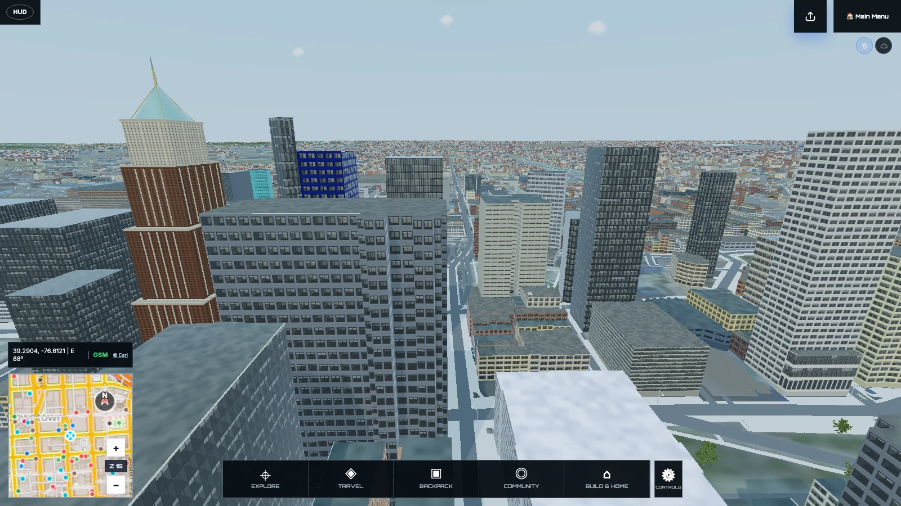
Start with a familiar street or somewhere you have never been. Explore on foot, change vehicles, try a field activity, or build a place to return to.
Search for a real destination or begin where you are curious—from a nearby street to another continent.
Walk at street level, drive farther, launch a boat, take to the air, or pull back to the living globe.
Look for wildlife, plants, geology, metal finds, landmarks, changing weather, and other field opportunities.
Build a field journal, earn trust with companions, save places, create rooms, contribute edits, and return.
Begin at the globe, arrive at street level, and change how you travel without leaving your expedition.
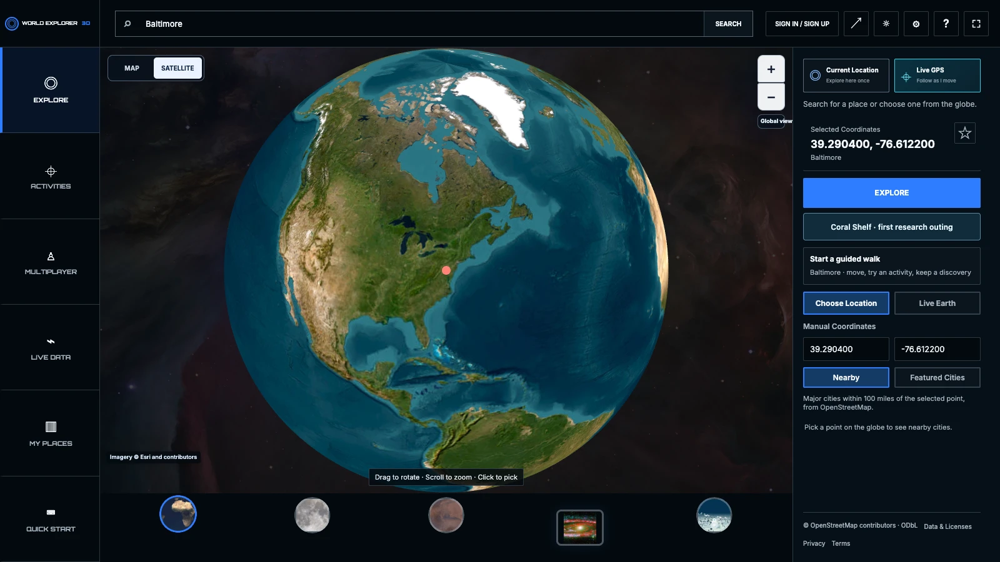
Search for a place, enter coordinates, or pick a featured destination. World Explorer brings you into the same connected experience for walking, driving, field work, building, and flight.
Both clips were recorded through the visible player flow over the fully assembled Baltimore world. Press play to see the real flight controls in motion.
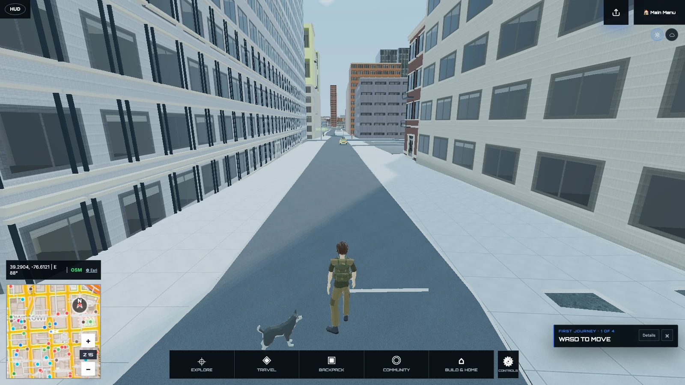
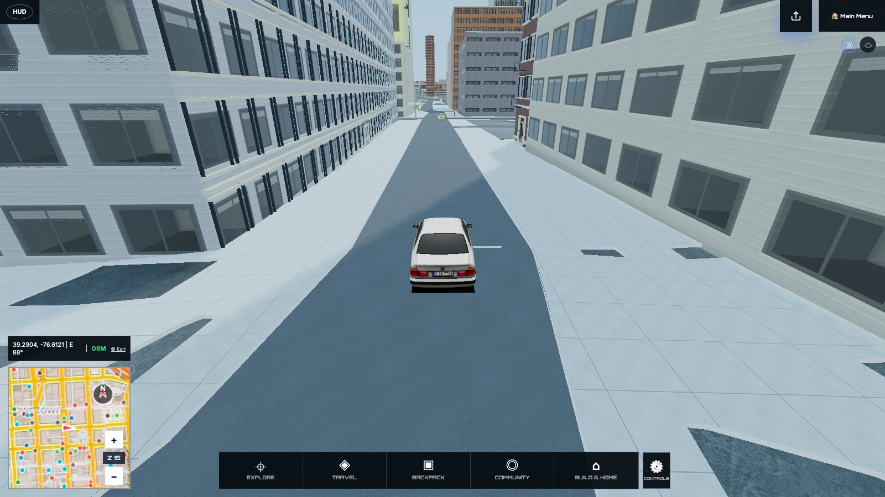
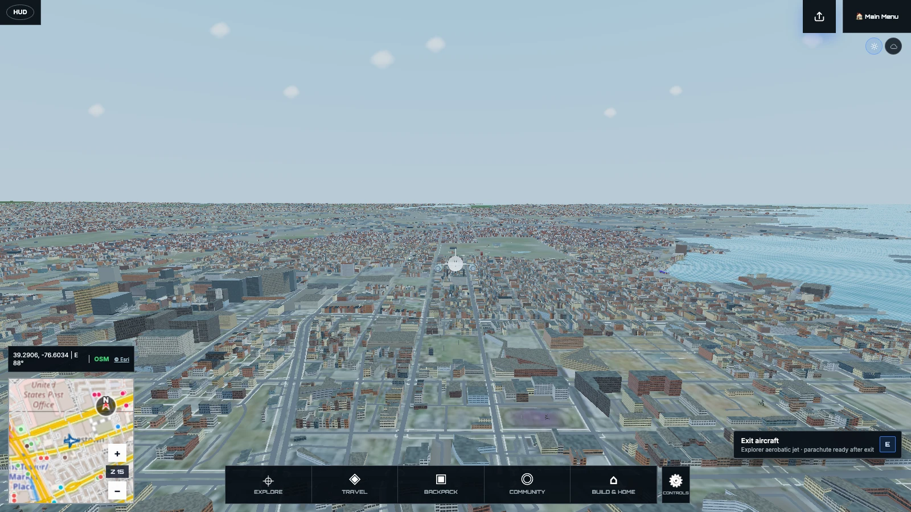
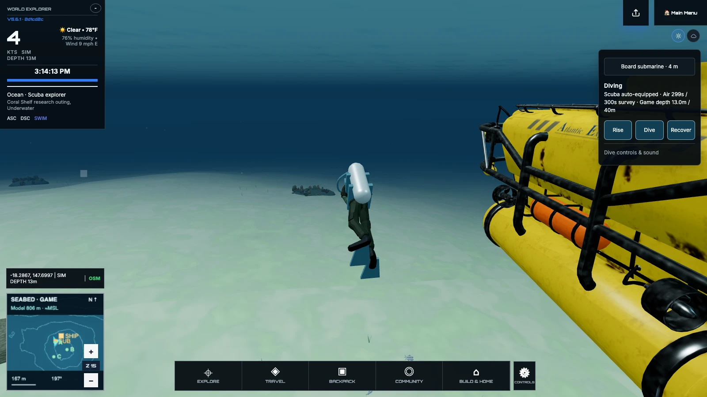
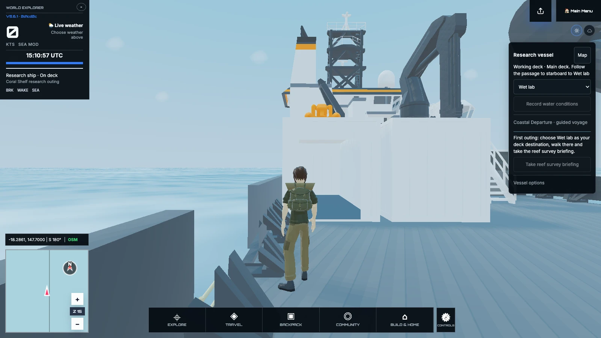
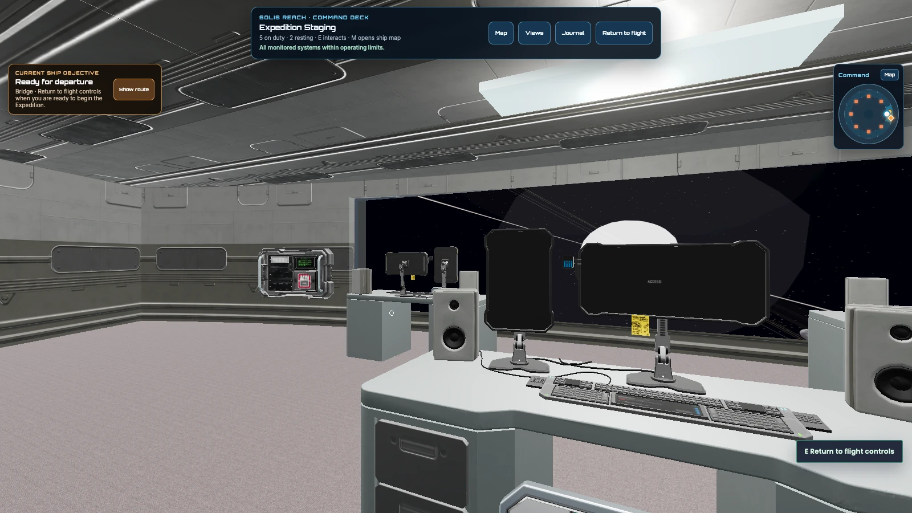
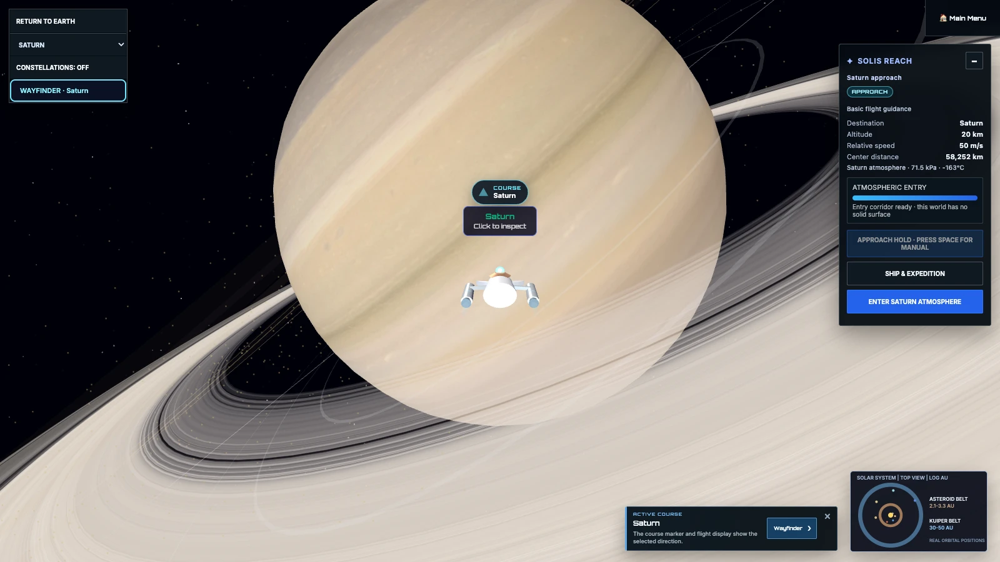
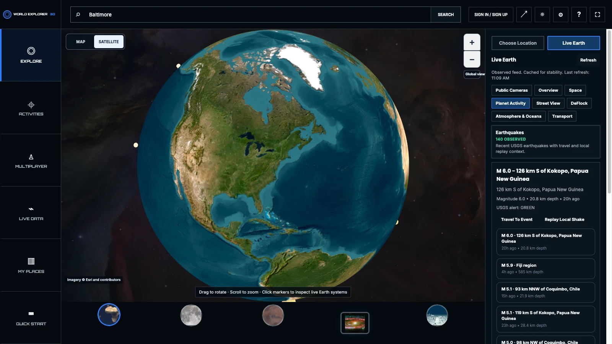
Move through a working vessel, prepare an outing and deploy its submarine. Bring your observations back to the lab, or keep exploring a geographic voyage with nearby scenery that follows your travel.
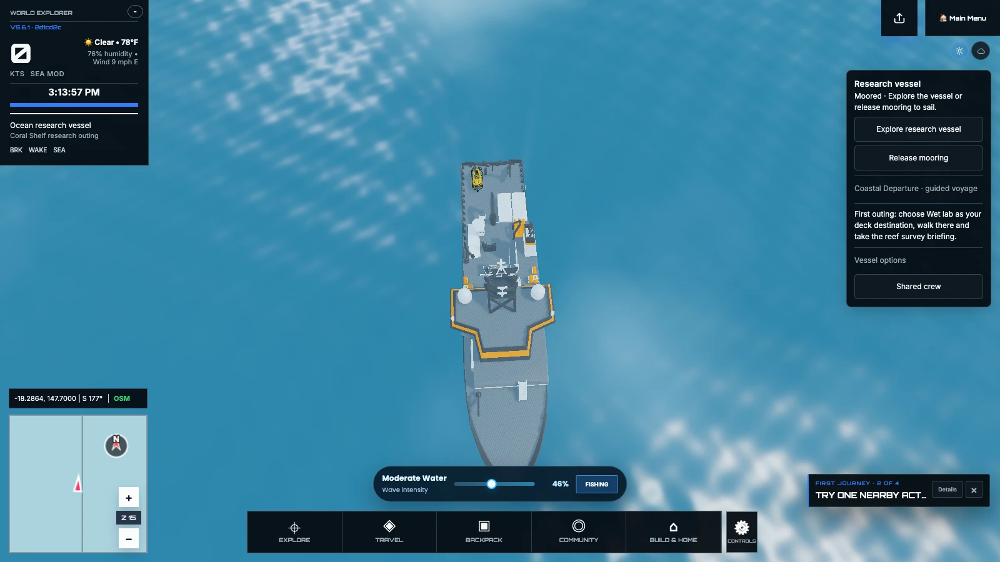
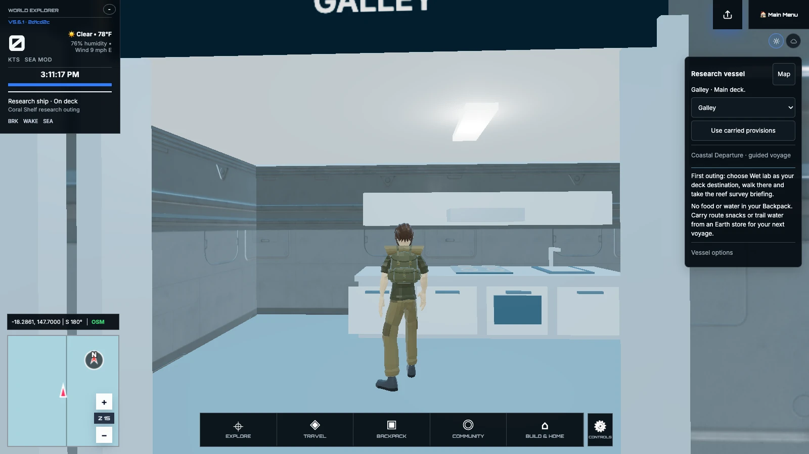
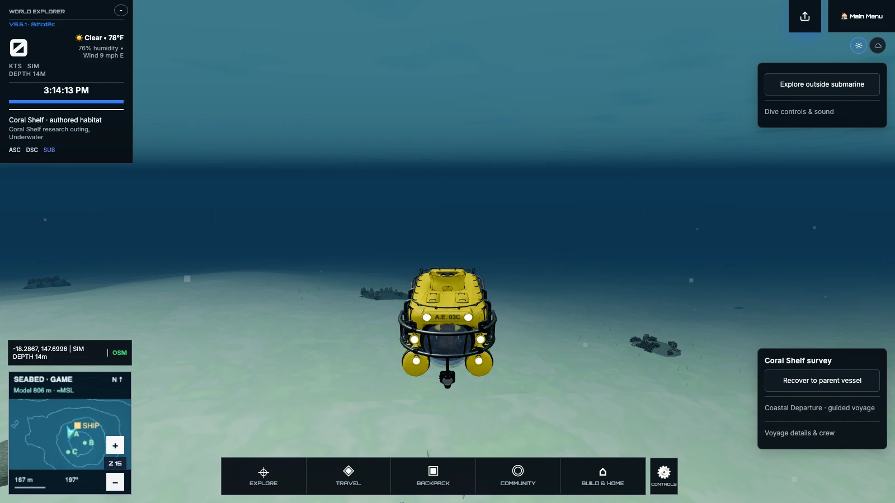
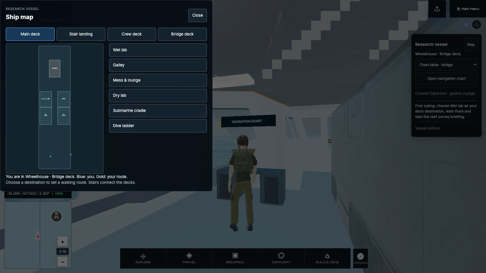
Enter from Baltimore’s streets, follow the visitor routes and keep notes in your Journal. These first aquarium and museum visits each have their own layout, exhibits and map.
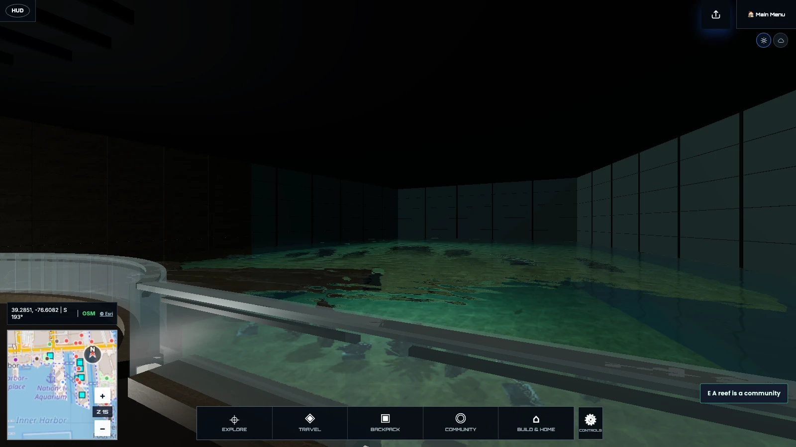
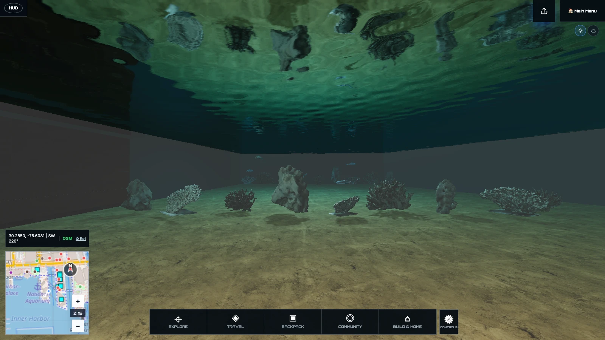
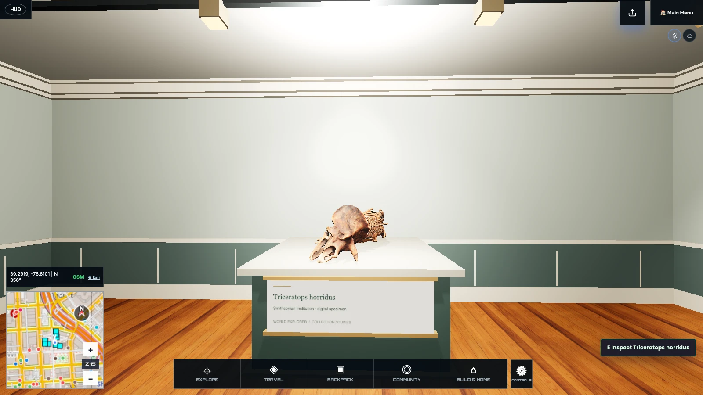
Limited, independent interpretations of the National Aquarium’s Pavilion and Blacktip Reef route and The Peale’s front galleries. Other exhibits and rooms are not yet included.
The systems are organized around what you are trying to do. Travel changes your point of view. Field work deepens a place. Creation and multiplayer let your time there leave a trace.
Search the globe, enter a location, then walk, drive, boat, fly, orbit, or visit the Moon without leaving the connected world.
Use a field journal and activity-specific tools to study wildlife, plants, rocks, landmarks, and finds tied to place.
Build rooms and objects, contribute reviewed world edits, preserve memories, and explore together through multiplayer.
The world is available without a payment decision at the door. An account keeps multiplayer and persistent progress together. Donations are optional and support hosting and continued development.
Start in the browser, learn the controls in context, and use the core world before creating an account.
If World Explorer becomes a place you value, you can help keep it online. Support never gates the core experience.
It is an open exploration experience with game systems, but no single required storyline. Your goals can be travel, discovery, collection, creation, learning, or spending time with other explorers.
Yes. World Explorer builds its world from geographic data and open real-world feeds, then fills in the playable scenery and activities needed for exploration.
Regional terrain and buildings can follow your travel. Detailed streets, interiors and activities stay within the selected district; this is not yet a seamless worldwide simulation.
Yes. Mobile includes touch controls and field activities. A desktop browser is currently recommended for the highest rendering quality and the largest city scenes.
No account is required for core exploration. Sign in when you want multiplayer and persistent account-linked progress.
Yes. Quick Build places Blocks in the current location. Local builds stay on this device, while room builds can be shared with other signed-in explorers.
Enter the world now, or begin with a familiar place and discover what changes when it becomes somewhere you can inhabit.